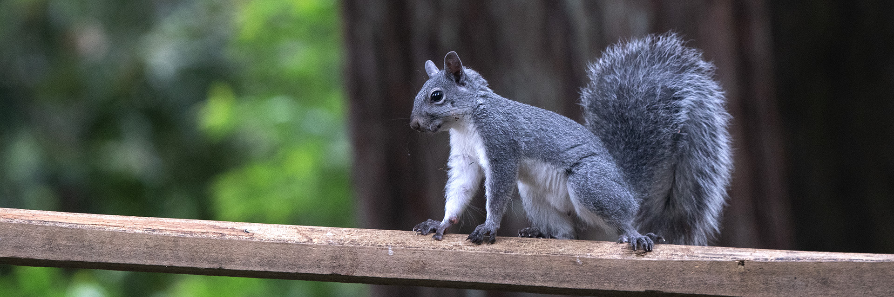
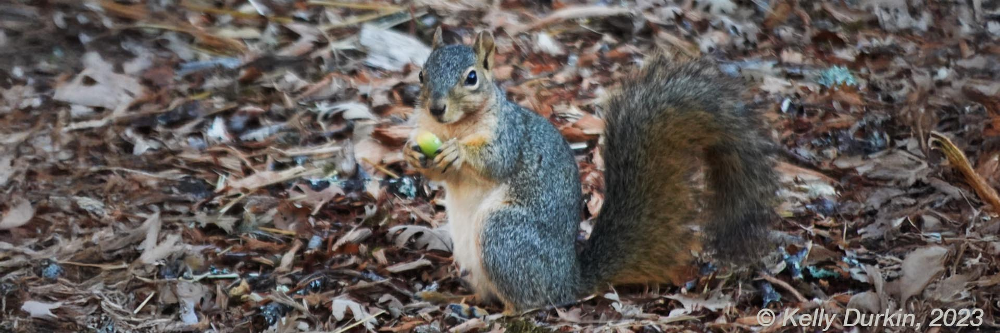

Species Snapshots


Characteristics
Tamiasciurius douglasii - West Coast Native
The Douglas Squirrel
Small and feisty, with reddish-brown fur and a seasonal color change. Half the size of the other tree squirrels. Found only in conifer forests.
“He is, without exception, the wildest animal I ever saw,—a fiery, sputtering little bolt of life, luxuriating in quick oxygen and the woods’ best juices.”
“He is the mocking-bird of squirrels, pouring forth mixed chatter and song like a perennial fountain; barking like a dog, screaming like a hawk, chirping like a blackbird or a sparrow; while in bluff, audacious noisiness he is a very jay.” - The Mountains of California, John Muir, 1894
Douglas Squirrel Quick Facts:
- Adult Size: Total - 12 inches (body - 7" ; tail - 5")
- Habitat: Conifer forests, from redwoods to high elevation mountains
- Tail and Appearance: Reddish-brown fur, creamy belly in winter/spring and sunset orange in summer/fall, dark brown tail with a glimmer of white on the edges and flattens when they run, forms s-curve when sitting
- Diet: Conifer seeds, fungi, berries, tree buds
- Behavior: Vocal, fast-moving, territorial, rarely seen in suburbs
Sciurus griseus – West Coast Native
The Western Gray Squirrel
A shy forest and oak savannah dweller with elegant gray fur, a white belly, and an extraordinarily lush and feathery tail. Requires large connected tree canopies to survive.
Western Gray Quick Facts:
- Adult Size: Total - 24 inches (body 7-12" ; tail 7 to 12")
- Habitat: Oak woodlands and pine forests with continuous canopy
- Tail and Appearance: Silver-gray fur - one solid color, white belly, fluffy feathery tail with frosted edges
- Diet: Acorns, pine nuts, fungi, berries, buds
- Behavior: Shy with a low warbling bark, rarely seen in urban areas
Sciurus carolinensis – Non-Native
The Eastern Gray Squirrel
City-smart and adaptable, the Eastern Gray can range in color from gray to black. They out-compete natives in many areas.

Eastern Gray Quick Facts:
- Adult Size: Total – 20 inches (body: 9–11"; tail: 7–9")
- Habitat: Cities, suburbs, parks, riparian zones
- Tail and Appearance: Solid or mottled gray, white and brown or all black fur, brown appears on face sides or nose, white belly, rounded fluffy furry tail
- Diet: Nuts, fruit, cultivated crops, insects, birdseed
- Behavior: Bold, adaptable, usually seen in human environments in the West
We suggest that the eastern gray squirrel might become more damaging to the two native diurnal species of tree squirrels in California, Sciurus griseus and Tamiasciurus douglasii, than the introduced eastern fox squirrel (Sciurus niger).
Southern California Academy of Sciences, 2017
[Eastern Gray] Management requires a permit from the California Department of Fish and Wildlife if land or property is being damaged.
UC Agriculture and Natural Resources, June 2020
Sciurius niger - Non-Native
The Eastern Fox Squirrel

Fox Squirrel Quick Facts:
- Adult Size: Total: 24 to 30 inches head to tail (body - 12 to 15" ; tail - 12 to 15")
- Habitat: Cities, county parks, campuses, agricultural edges
- Tail and Appearance: Reddish-brown or orange belly, thick coarse tail
- Diet: Acorns, fruit, bird eggs, human food scraps
- Behavior: Confident, bold and highly adaptable; can be aggressive in county parks
“Of the four tree squirrels, the eastern fox squirrel is by far the most serious pest to homes and gardens in urban and suburban situations. In some cities, eastern fox squirrels have moved outward into agricultural land where they have become a pest of commercial crops." University of California - Agriculture and Natural Resources website
Non-native Squirrels - Introduced from Eastern US - early 1900's
The introduced eastern gray and eastern fox squirrel thrive in human-dominated landscapes like city parks, suburban backyards and attics, and nut orchards, and are very familiar sights (and often, pests) to most Californians. They’re nearly as ecologically flexible as rats and are perfectly happy to nest close to humans and to eat the same native plants as western grays, plus human garbage and non-native plants that the westerns won’t touch. Bay Nature, May 2019
The first documented release of Fox Squirrels in California occurred around 1904 at the Veterans’ Home in Sawtelle (West Los Angeles).
Civil War and Spanish‑American War veterans brought them from the Midwest as pets and released them on the grounds.
Since then, Fox Squirrels have become well established in Southern California and continue to expand into suburban and foothill landscapes.
These squirrels now dominate many urban and suburban areas. Although they were introduced by humans just over a hundred years ago, a brief period in ecological terms, their presence has begun to shift the ecological balance in unexpected ways.
A Gentle Reminder
The squirrels that live today in California's urban areas and much of its suburban areas, business parks and college campuses were introduced by people who wanted to “re-nature” urban areas or by people binging them in as pets that were released or escaped. .
The native California squirrels still thrive in the wild but are increasingly being pushed away both by habitat reduction and the more adaptable invasive squirrels. It's important to remember that it is the non-natives that most people interact with.
Squirrel Identification Matters
Accurate squirrel identification can help protect a species.
As of 2023, Western Gray Squirrels are officially listed as endangered in the state of Washington, with fewer than 1,500 remaining in the state. In Oregon, they're listed as a sensitive species, with populations declining in key oak-woodland regions.
Learn More